Computer engineer. I build hardware and the software that runs on it.
Rising senior at South Carolina: B.S. Computer Engineering, AI concentration, EE minor. I like
working close to the metal. I design the board, write the firmware, and build whatever runs on top.
Built PySpark/Python notebooks in Microsoft Fabric to transform data across lakehouses for enterprise reporting.
Developed REST APIs connecting internal Cox systems and databases, powering a Power BI cost dashboard across 4 data sources.
Contributed to enterprise AI adoption initiatives, building Copilot Studio agents and Power Automate flows for internal teams.
Regent (Chapter President)
Dec 2025 – Present
Theta Tau, Zeta Delta Chapter · Columbia, SC
Lead a 40+ member professional engineering fraternity: recruitment, national compliance, chapter finances, and events.
Built and maintain the chapter's brother portal, with Firebase auth, role-based access, and live voting used for chapter decisions.
Drafted national award submissions across website, philanthropy, and service.
Systems Engineering Intern
May 2025 – Aug 2025
Golden Code Development · Atlanta, GA
Sole intern for a private software consultancy specializing in system development.
Automated system setup and server security using Ansible, Docker, and iptables.
Deployed internal web systems with KVM virtualization.
IT Intern
May 2025 – Aug 2025
Strategic Benefits Advisors · Atlanta, GA
Upgraded seven conference rooms using Cisco Roombars and speaker systems.
Sourced and installed technology solutions for employee workstations.
Ambassador & Social Media Intern
Sep 2024 – Present
Molinaroli College of Engineering & Computing · Columbia, SC
Shoot and edit video content for the college's recruiting and social channels.
// 02: PROJECTS
Things I've Built
Click any project for the full writeup, photos, and video.
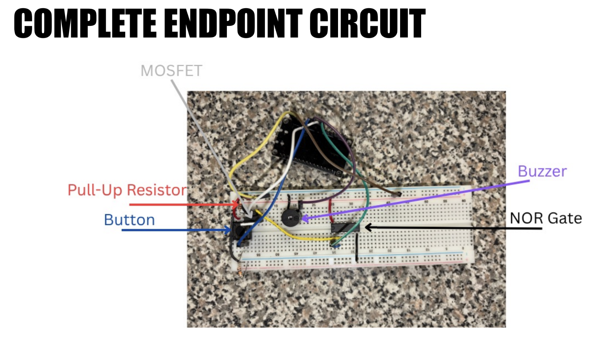
Modern Telegraph Relay System
Nucleo-G474RE · C++ · Embedded Firmware · ELCT 201 Capstone
Bidirectional Morse code relay bridging two isolated open-drain bus segments. Iterated
through 3 firmware designs after diagnosing a feedback-loop failure, landing on a
store-and-forward architecture with 320µs per-hop relay overhead.
C++Embedded SystemsSTM32FirmwareDigital Logic
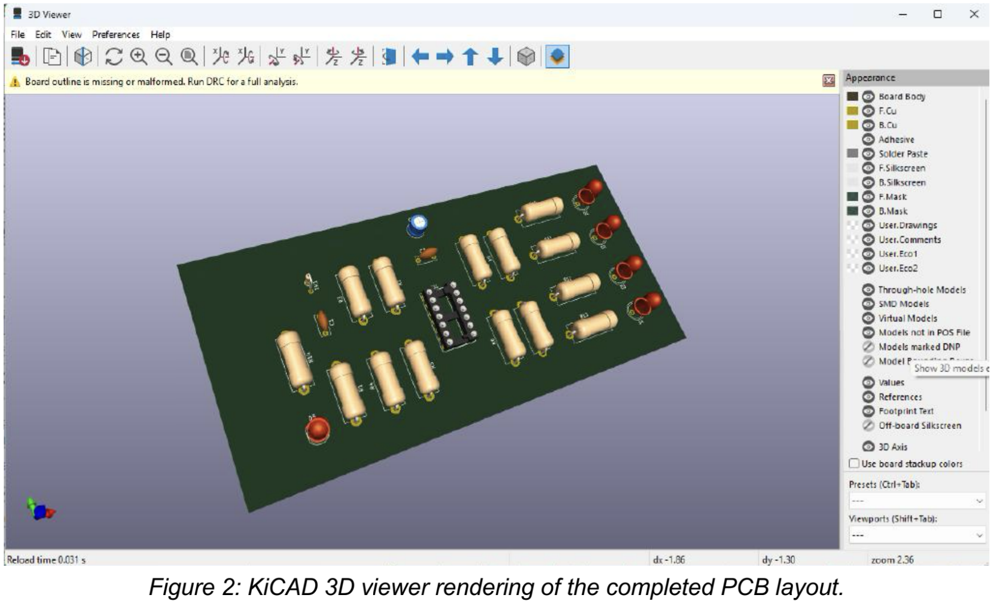
PCB Temperature Sensor: Food Warming Mat Monitor
KiCAD · LTspice · Thermistor Voltage Divider · ELCT 201
Designed, simulated, fabricated, and tested a 4-threshold temperature sensor circuit on a
custom PCB, from component-level calculations through soldered hardware validation.
PCB DesignKiCADLTspiceAnalog CircuitsSoldering
IMG
Volunteer Coordination Platform
In Progress
React 19 · Azure Functions · Cosmos DB · Python
Full-stack volunteer platform for a corporate bootcamp program. React frontend with
QR-based event check-in and MapLibre maps, Python Azure Functions backend over a Cosmos DB
NoSQL store, deployed through two GitHub Actions pipelines.
ReactAzurePythonCosmos DBCI/CD
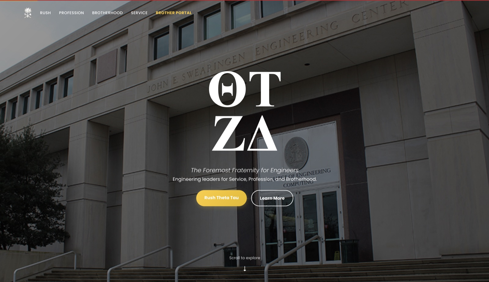
Theta Tau Chapter Portal
Firebase · GitHub Pages · JavaScript
Chapter website with a Firebase Realtime Database backend, role-based auth, and live voting.
Open source and actively maintained.
Open SourceActively Maintained
IMG
Self-Hosted NVR with AI Object Detection
In Progress
Frigate · Docker · RTSP
Self-hosted network video recorder integrating RTSP cameras with real-time AI object detection.
Real-Time Inference
Autonomous Robot Navigation
Duckiebot · ROS · Docker · PID Control
Implemented PID control for autonomous robot navigation on a Duckiebot platform.
PID ControlROS
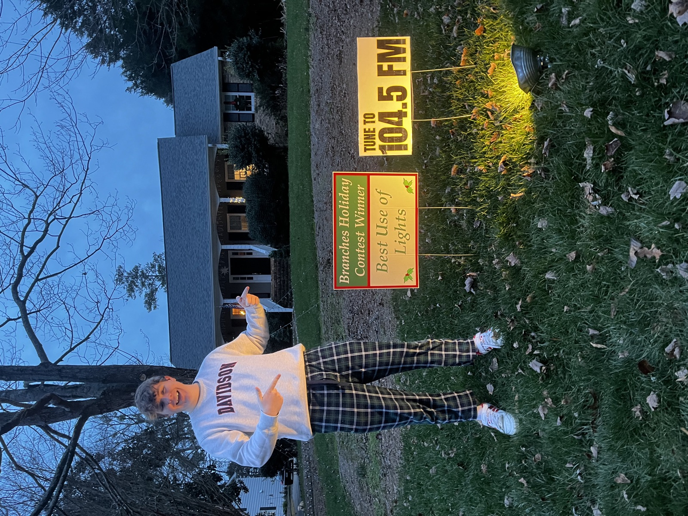
Christmas Light Show
Raspberry Pi · Holiday Lighting Controller
Raspberry Pi-driven holiday light display wired through relay-controlled circuits, synced
to an FM broadcast. Won "Best Use of Lights" in the neighborhood's holiday contest.
Raspberry PiPythonHome Automation
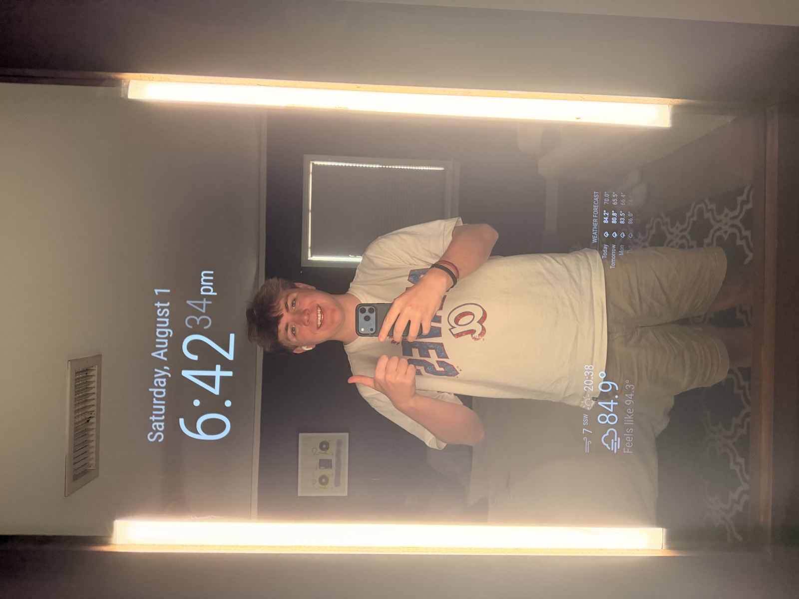
Magic Mirror
Raspberry Pi · Two-Way Mirror Display
Smart mirror built into a stained wood frame: two-way mirror glass over a repurposed
monitor, driven by a Raspberry Pi, showing live time and weather.
A two-station Morse code telegraph system connected through two relay stations, built as a 4-person
capstone project (team: Cole Kring, Heath McCullough, John Schmitt, Josh McGuire; ELCT 201,
University of South Carolina). Users press a push button at either endpoint to transmit Morse code,
which is repeated down the chain through two relay stations and played on a buzzer at the receiving end.
Relay Hardware: Open-Drain Bus Interface
The relay stations bridge two isolated bus segments using an open-drain interface built around
NOR-gate logic and MOSFET switching. Core components per relay node:
Pull-up resistor (1kΩ) to 5V on each bus segment, holding the line HIGH when idle.
N-channel MOSFET (IRF540N), which pulls the bus LOW when the transmit signal is active, acting as the "assert" mechanism.
NOR gate (CD4001, quad 2-input NOR IC), which inverts the bus signal before it reaches the MCU input pin, and also drives the MOSFET gate from the MCU's output signal.
Blue LED indicator on each bus segment, wired in series with the pull-up, lighting when the bus goes LOW (hardware-driven, no firmware involvement needed for the indicator itself).
Signal Behavior
MOSFET OFF (transmit low, gate low) -> pull-up holds bus HIGH (idle)
MOSFET ON (transmit high, gate high) -> MOSFET pulls bus LOW (active transmission)
Design Notes
Bus grounding: all relay nodes and both endpoints share a common ground, which is
required for the open-drain scheme to work across isolated segments; voltage sensed on one side
depends on a shared reference to be meaningful on the other.
Signal indication limitation: LEDs show one-sided bus activity per segment
(hardware-driven, no MCU involvement), but true collision detection (both directions active
simultaneously) isn't shown via a single LED; that state has to be resolved in software instead,
which is where the priority-checking logic in the relay firmware comes in.
Design Iteration & Performance
The firmware went through three major revisions after an early design surfaced a feedback-loop
failure between relay stations. The final architecture uses a store-and-forward approach with a
700ms bail timeout to prevent runaway retransmission.
Metric
Measured
Per-hop relay overhead
320µs
End-to-end latency
510ms
Bail timeout
700ms
Firmware revision
Rev. 3
Gallery
Complete endpoint circuit, labeled: pull-up resistor, MOSFET, NOR gate, buzzer
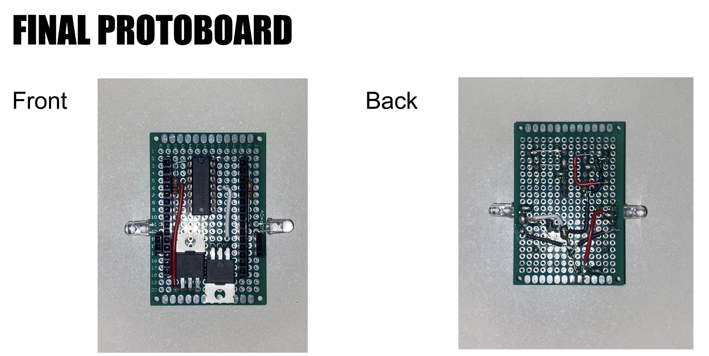
Final soldered protoboard, front and back
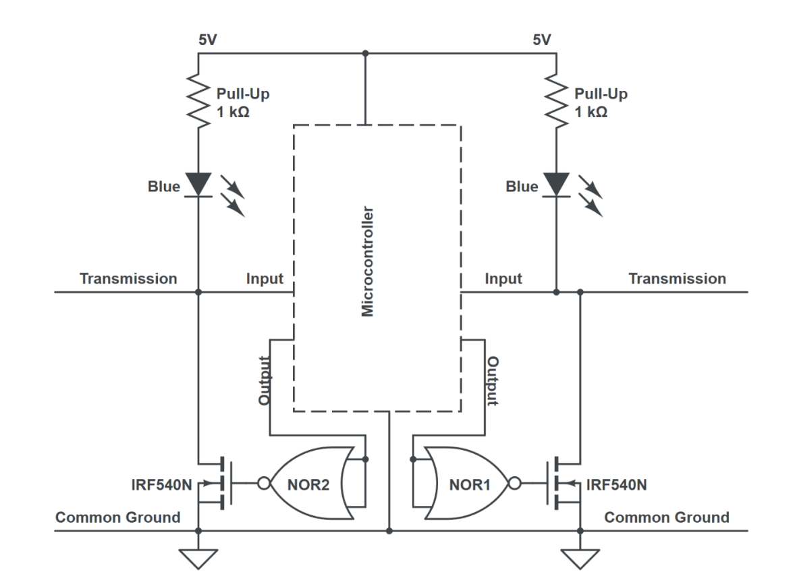
Open-drain bus interface schematic
Project / PCB Design
PCB Temperature Sensor: Food Warming Mat Monitor
KiCAD · LTspice · Thermistor Voltage Divider · ELCT 201
PCB DesignKiCADLTspiceAnalog CircuitsSoldering
Overview
A four-threshold temperature sensor circuit designed for a food warming mat application, built
end-to-end: schematic design, LTspice simulation, PCB fabrication in KiCAD, and hardware validation.
Solo project (ELCT 201, University of South Carolina).
Circuit Design
An NTC thermistor in series with a 10kΩ bias resistor forms a voltage divider; as temperature rises,
thermistor resistance drops, and the sensor voltage rises. That voltage feeds the non-inverting
inputs of four LM324 op-amp comparators, each with an independently set reference voltage. When
sensor voltage exceeds a given reference, that comparator output goes high and lights an LED through
a 333Ω current-limiting resistor.
Reference voltages were matched to sensor voltages at each threshold using standard 5% resistor values:
Temp
Sensor V
Ref V
Upper R
Lower R
30°C
2.774V
2.778V
1200Ω
1500Ω
45°C
3.491V
3.493V
2200Ω
5100Ω
60°C
4.012V
4.015V
2700Ω
11000Ω
75°C
4.358V
4.359V
1000Ω
6800Ω
PCB Design Process
Designed in KiCAD 7.0: schematic capture, electrical rules check (ERC) verification, then PCB
layout. A single LM324 quad op-amp (DIP-14) implements all four comparators. Ground plane applied to
the bottom copper layer for low-impedance ground reference; signal traces routed on the top copper
layer. Final board: 5.49" x 2.58", quoted at $70.75 for three boards via OSH Park.
Simulation (LTspice)
Verified the full circuit topology before fabrication; thermistor modeled as a fixed resistor at
each design temperature. Confirmed comparators trigger sequentially as temperature rises: only the
first LED at 30°C, all four LEDs active by 75°C.
Hardware Results
Threshold
Designed V
Measured V
Error
30°C (D1)
2.778V
2.6V
6.4%
45°C (D2)
3.493V
3.4V
2.7%
60°C (D3)
4.015V
3.9V
2.9%
75°C (D4)
4.359V
4.2V
3.6%
The 30°C threshold showed the largest deviation (6.4%), attributed to resistor tolerance stacking in
the R6/R7 divider: outside individual ±5% resistor tolerance but still an acceptable calibration
offset for the application (about a 3 to 4°C shift). The remaining three thresholds fell within the
5% tolerance budget.
Power Analysis
Estimated current draw: about 3mA (no LEDs), 21mA (2 LEDs), 39mA (4 LEDs). Estimated battery life from
3 series AA cells (900mAh): about 23 hours under full load, 300 hours idle.
Key Takeaways
The full engineering design cycle: component-level calculation → simulation → PCB
fabrication → hardware validation → calibration analysis, with a real, quantified
discrepancy between designed and measured values, and a working root-cause explanation (resistor
tolerance stacking).
Gallery
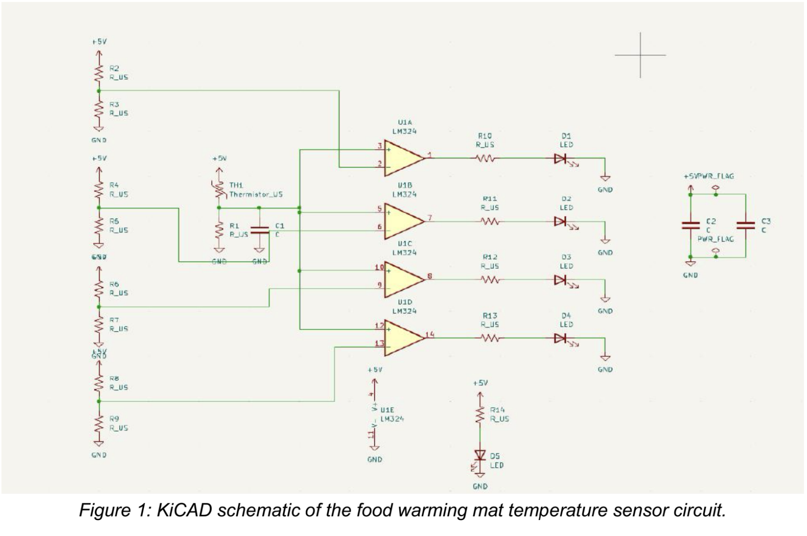
KiCAD schematic of the sensor circuit3D render of the completed PCB
Project / Full-Stack In Progress
Volunteer Coordination Platform
React 19 · Azure Functions · Cosmos DB · Python
ReactAzurePythonCosmos DBCI/CD
Overview
A full-stack volunteer coordination platform built for a corporate bootcamp program: event
scheduling, QR-based check-in, and volunteer coordination across a layered architecture. A React
frontend (with MapLibre for event maps) talks to an Azure Functions API, which sits on top of a
Python service layer backed by a Cosmos DB NoSQL store.
Architecture
Frontend to API to service layer to database: the React 19 frontend calls an Azure Functions API,
which delegates business logic to a Python service layer, which reads and writes to Cosmos DB.
Deployed through two separate GitHub Actions pipelines.
Chapter website for Theta Tau, built with a Firebase Realtime Database backend, role-based auth, and
live voting for chapter decisions. Open source and actively maintained.
Gallery
Chapter portal homepage
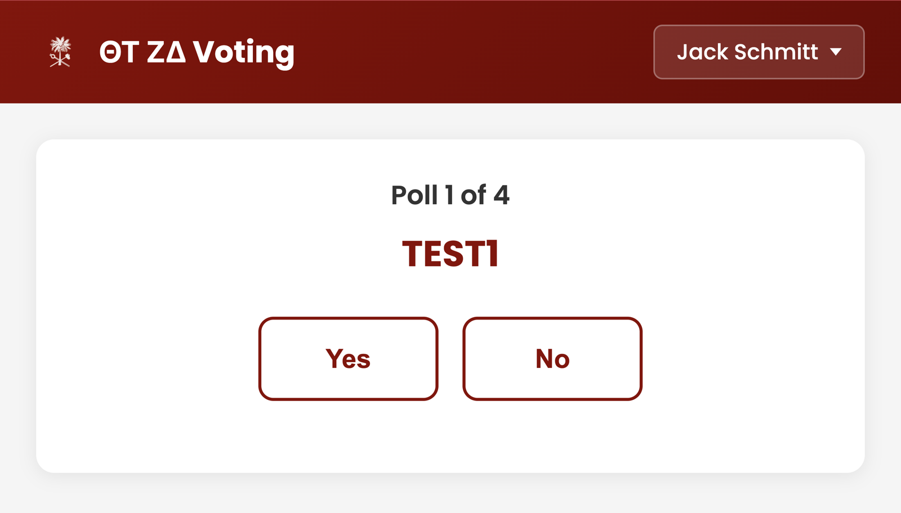
Brother voting view
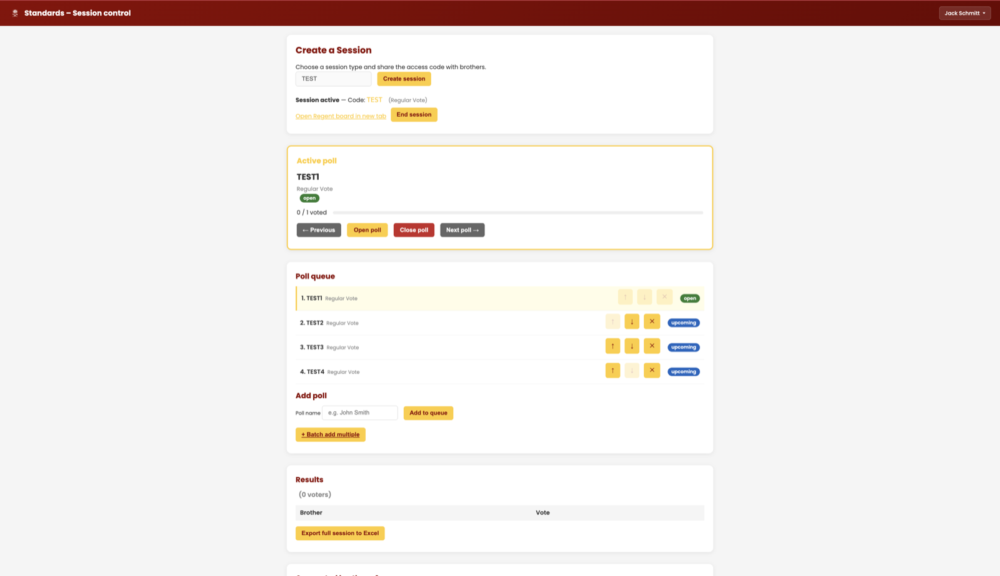
Admin session control panel
Project / Self-Hosted In Progress
Self-Hosted NVR with AI Object Detection
Frigate · Docker · RTSP
Real-Time Inference
Overview
Self-hosted network video recorder integrating RTSP cameras with real-time AI object detection via Frigate, running in Docker.
Project / Robotics
Autonomous Robot Navigation
Duckiebot · ROS · Docker · PID Control
PID ControlROS
Overview
Implemented PID control for autonomous robot navigation on a Duckiebot platform running ROS in Docker.
Gallery
Autonomous navigation demo
Project / Raspberry Pi
Christmas Light Show
Raspberry Pi · Holiday Lighting Controller
Raspberry PiPythonHome Automation
Overview
A Raspberry Pi-controlled holiday light display wired through three 8-channel relay boards driving
individual mechanical relays for each lighting circuit, mounted on a custom-built plywood control
panel. The show ran synced to an FM broadcast; visitors could tune their car radio to 104.5 FM to
hear music timed to the lights. It won "Best Use of Lights" in the neighborhood's
Branches Holiday Contest.
Gallery
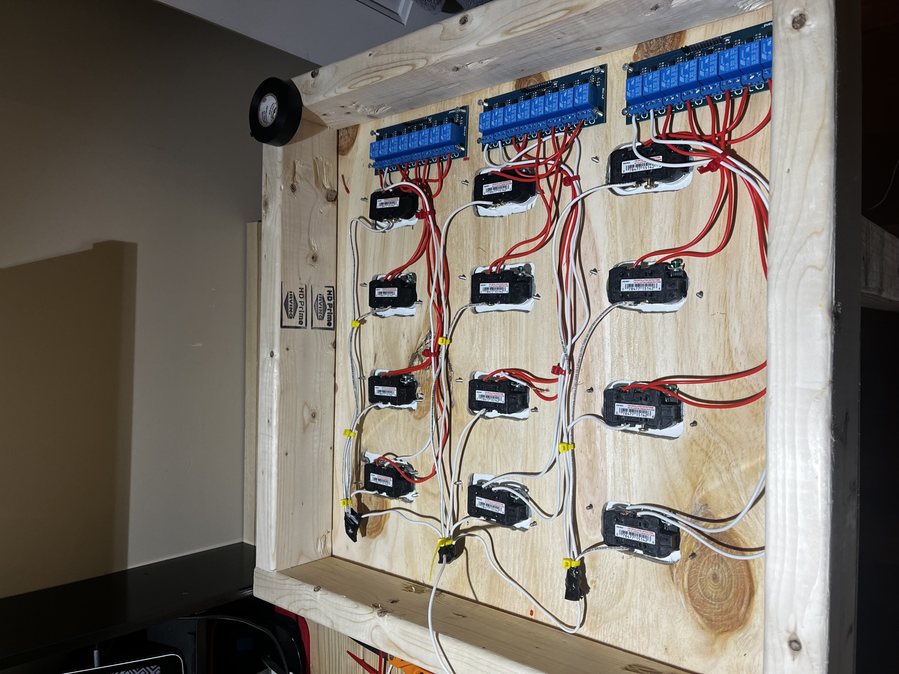
Relay control panel, three 8-channel boardsBest Use of Lights award, Branches Holiday Contest
Light show video
Project / Raspberry Pi
Magic Mirror
Raspberry Pi · Two-Way Mirror Display
Raspberry PiTwo-Way Mirror
Overview
A smart mirror built into a stained wood frame, using two-way mirror glass mounted over a repurposed
monitor. A Raspberry Pi drives the display behind the glass, showing live modules like time and
weather. A physical toggle switch mounted on the frame controls power to the unit.